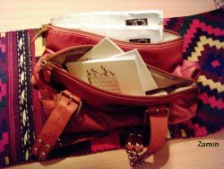

پذيرش > كوچه به كوچه > برگه های امضا، جزء جدایی ناپذیر کیفم / زهره امین


 برگه های امضا، جزء جدایی ناپذیر کیفم / زهره امین برگه های امضا، جزء جدایی ناپذیر کیفم / زهره امین
26 بهمن 1385 - - نسخه قابل چاپ
درست از روز بعد از شركت در كارگاه، برگههای "یک میلیون امضا" و دفترچههای "تأثیر قوانین در زندگی زنان" شدند جزئی از لوازم توی کیفم. بدون آنها انگار چیزی کم دارم.
هر روز موقع بیرون رفتن از خانه چک میکنم که مبادا روز قبل دفترچه و برگه تمام شده باشد و چیزی همراهم نباشد. فرقی نمیکند عازم کجا باشم. سرکار، خرید، سینما، مطب دکتر، پارک، ورزش، استخر، مهمانیهای دوستانه و خانوادگی یا هر جای دیگری. حتی توی فرودگاه موقع بدرقه دوستان!
از همان دوران بچگی عادت داشتم با اطرافیانم ارتباط کلامی برقرار کنم. به گفتهی دوستانم شاید بیشتر از دیگران. گوش کردن به درددلهای راننده تاکسی و مسافران یکی از دغدغههای من است. دوست شدن با فروشندههایی که معمولا ازشان خرید میکنم. حرف زدن با همکارانم، اعضای جمعیتی که در آن عضوم. دکتر و منشی مطبی که معمولا به آنجا میروم و...صحبتهایمان از حرفهای معمولیست تا بحثهای اجتماعی و سیاسی و فرهنگی. که البته همیشه حرفهای معمولی خواهناخواه به سمت این بحثها هم کشیده میشوند.
حس میکنم حرف دیگری هم به حرفهایم اضافه شده. در واقع وظیفهای روی دوش خود حس میکنم که چرا همجنسانم از چنین طرحی نباید اطلاع نداشته باشد؟ چرا باید فکر کنند تا دنیا بوده همین بوده و کاری نمیشود کرد. مگر درددل گرهای از کار آنها می گشاید؟
1- در محل کار و زندگی
همکاران در محل کار و جمعیتهایی که عضو آنها هستم و بیشتر همسایهها دیگر میدانند که من همیشه دفترچه و ورقهی امضا توی کیفم هست. بیشترشان امضا کردهاند. هر چند وقت یکبار خودشان میآیند از من سراغ ورقهی جدیدی میگیرند که مثلا فلان روز میهمانی یا دوره دارند و ممکن است بتوانند امضا بگیرند.
2- در فروشگاه
حدودهای 2 بعداز ظهر، بعد از انجام کارهای روتین، برای خرید وارد یکی از فروشگاههای زنجیرهای میشوم. با دختران خوشروی فروشنده دوست هستم.
همیشه این موقع هم فروشگاه خلوت است و همه به خاطر ناهار دور هم جمع میشوند و فقط یکی دو نفر دم صندوق مینشینند. به دختران نزدیک میشوم. سلام علیک گرمی میکنیم و آنها بفرمایی میزنند. دلم غش میرود از بوی ناهارشان. میگویم چند دقیقه میتوانم مزاحمتان بشوم. هر یک با خوشرویی میگود: خواهش میکنم، بفرمایید.
در حالیکه آنها ناهار می خورند برایشان طرح یک میلیون امضا را توضیح میدهم.
هیجان زده میشوند. می پرسند: «مگر میشود؟»
میگویم: «چرا که نه؟»
دختری که سنش به نظر بیشتر از بقیه میآید، میگوید: «اگر حق طلاق جزئش باشد من امضایش میکنم.»
دختر دیگری با بدگمانی میگوید: «باید کتابچه را بخوانم.»
دختر بغلدستیاش میگوید: «مشتری دائممان است. من خوب میشناسمش. قابل اعتماد است.»
میگویم: «نه عزیزم. او حق دارد. نمیخواهم نخوانده امضایش کنید. من که همیشه اینجا میآیم. همهتان بخوانید اگر موافق بودید دفعهی بعد امضایش کنید.»
انگار اینطوری همهشان راحتترند. جز دختری که از بند حق طلاق خوشش آمده بود. او میخواهد همان لحظه امضا کند و بنویسد با بند طلاق موافقم. میگویم حالا روی بقیهی بندها هم خوب فکر کن تا بنویسی همهی موارد. میخندد و قبول میکند. خریدم را میکنم و میروم.
هفتهی بعد دوباره حدود ساعت 2 از آنجا رد میشوم. به چیزی احتیاج ندارم. اما کنجکاوم که آیا امضا میکنند یا نه.
دوباره وقت غذاست و دل گرسنهی من که صبحانه هم نخوردم مالش میرود. بخصوص که دوتایشان قرمهسبزی دارند و بویش فروشگاه را برداشته. تعارف میکنند و من باز میگویم که نوش جان! دارم میروم با بچههایم ناهار بخورم.
بیشترشان همانهایی هستند که با آنها قبلا حرف زده بودم و دوسه دختر جدید بین آنها هستند. قدیمیها مشتاقانه میگویند خواندیم و خیلی خوب بود و حتما امضا میکنیم. ورقه را درآوردم. همه امضا کردند. دوتایشان کنار ظرف قرمهسبزیشان و بقیه کنار ظرف قیمه و کوکو و کوفته و... پیش خودم گفتم هر امضایی بوی غذای امضاکننده را میگیرد و احتمالا لکههای هم روی ورقه میافتد. فکرم را به آنها میگویم و همه با هم میخندیم.
قدیمیها برای جدیدها توضیح میدهند. بحثهایی هم در میگیرد؟ که آیا فایدهای هم دارد؟ هر کدام خاطرهای تعریف میکنند در جهت تأئید مندرجات دفترچه. خیلی منتظر بودند که من بروم و این خاطرات را برایم تعریف کنند که خود یا نزدیکانشان واقعا با پوست و خونشان با این قوانین تبعیضآمیز درگیرند. با حوصله گوش میدهم.
فکر میکنم مجبورم کمی خرید هم بکنم که مدیریت شاکی نباشد از اینکه با کارمندانش حرف میزنم. کالسکهای برمیدارم و به طرف قفسهها میروم. دارم پنیری انتخاب میکنم که یکی از فروشندهها با یک خانم مشتری به من نزدیک میشوند. دختر فروشنده میگوید: «میشود برای این خانم هم توضیح بدهید؟»
خانم مشتری که خیلی خوشلباس و خوشتیپ است گوش میدهد و بعد سر درددلش باز میشود. مشتریان بعد از ظهر یواش یواش سرو کلهشان پیدا میشود و تک و توک دور ما جمع میشوند. من هنوز میترسم از مدیریت که پیدایش شود.
چند نفر خودشان ورقه را میگیرند و امضا میگیرند. دختران فروشنده با شوخی آقایان فروشنده را به جلو هل میدهند که شما هم باید امضا کنید. به شوخی میگویم امضای زوری نمیگیرم. مجبورم کمی برایشان توضیح دهم. یکیشان میگوید: «حتما خودت دختر داری و داری برای آیندهشان تلاش میکنی!» گفتم: «اتفاقا برعکس! هر دو فرزند من پسر هستند و اتفاقا برای آیندهشان تلاش میکنم!»
با خوشخلقی گفتند: «شما که دارید آنها را زنذلیل میکنید.»
گفتم: «وقتی پسران من با زنان آیندهشان حقوق مساوی داشته باشند مسلما در زندگی خوشبختترند. چون زنهای آنها احساس کمبودی نمیکنند. در ضمن هر کدام از پسران من یک نفر کامل است و میخواهد با یک زن کامل زندگی کند نه یک زنی که در جامعه نصفهنیمه حساب میشود. یک زن با حقوق کامل مسلما هم همسر و هم مادر و هم کارگر و هم کارمند و دکتر بهتریست تا زنی که همیشه حس کند نصف یک انسان ارزش دارد.
با خنده ادامه دادم اینطور دیگر مهریهی زیادی هم نمیخواهد. نمیخواهد تمام حق و حقوق خوردهاش را با مهریه جبران کند.»
آقایان فروشنده میخندند. راست میگویید ها...
یکیشان سر دیه مسئله دارد. گفتم: «اگر دست تو خدای نکرده بشکند و دست خواهر یا مادرت آیا هزینهی عمل جراحی شماها با هم فرق دارد؟» گفت: «خداییش، نه!»
یکیشان سر ارث مسئله دارد؛
 من نمیخواهم خواهرم اندازهی من از پدر مادرم ارث ببرد. من نمیخواهم خواهرم اندازهی من از پدر مادرم ارث ببرد.
خواهرت کار میکند؟
نه، تازه من دیپلمم و خواهرم لیسانس. اما هر جا میرود به او کار نمیدهند.
پس تازه تو پولدارتر از او هستی.
او شوهر میکند و شوهرش خرجش را میدهد.
مگر او برای پول شوهر میکند. اگر اتفاقی بیفتد که او مجبور شود خرج خانه بدهد چه؟
خلاصه بحث به درازا کشید. بحث با آقایان و با خانمهایی که زخم بسیاری از این قوانین خوردهاند.
آخرش همه امضا کردند و من مجبور شدم خریدهایی بکنم که چندان ضروری نبودند و ساعت 5 گرسنه و بیحال رسیدم به خانه.
گاهی آدم باید برای هدفش جانفشانی کند.
3- در اغذیه فروشی
روز دیگر از صبح تا ساعت 3 کار داشتم و نرسیده بودم ناهار بخورم. ساعت 4 هم باید جایی میبودم. پس نمیتوانستم برای خوردن ناهار به خانه و پیش بچهها بروم.
وارد پیتزافروشی شدم که مینیپیتزاهای رژیمی و ارزانی میفروشد. همهی پرسنل آن خانماند. در آن ساعت جز من مشتری دیگری نداشتند و درحال استراحت و بعضیهاشان در حال خوردن غذا بودند.
حساب کردم خوردن آن مینیپیتزای فسقلی بیشتر از چند دقیقه طول نمیکشد. پس وقت داشتم برای صحبت. از خوشمزگی پیتزا شروع کردم و اینکه چقدر خوشم میآید خانمها به طور مستقل تمام کارهای پیتزافروشی را انجام میدهند.
وقتی صحبت گل انداخت، دفترچهای را درآوردم و شروع به صحبت راجع به طرح یک میلیون امضا کردم (من معمولا از کلمهی کمپین و یا حتی کارزار و بسیج استفاده نمیکنم) بدون استثنا صورت همهشان با لبخندی بزرگ پوشیده شد و سوال پشت سوال. چشمهای مسئولشان از امید برق میزد. دفترچه و برگهای به آنها دادم و گفتم خوب بخوانیدش و اگر موافق بودید امضایش کنید. (یادم رفت بگویم که من با امضا گرفتن جنگی موافق نیستم.) همه گفتند یادتان نرود باز بیایید.
مسلم است که باز رفتم.
4- در بانک
خوشبختانه تازگیها بیشتر بانکها سیستم شماره دهی برقی دارند و صندلیهایی که موقع انتظار رویش بشینی و تا صدا کردن شمارهات میتوانی راحت وقتت را به کتابخواندن و یا صحبت با بغلدستیات بگذرانی.
میروم وسط دو خانم مینشینم و مشغول خواندن کتاب. پارتی بازی مسئول یکی از صندوقها برای مشتریهای خاصی که شمارهشان بعد از ماست، باعث میشود هر سهما برای اعتراض متحد شویم. اعتراض ما مورد توجه قرار میگیرد و کارها تندتر پیش میروند. کتاب را میبندم و با خانمهای بغلدستیام شروع به حرف زدن میکنم.
گاهی در این چند دقیقه حرف زدن خانمها خلاصهای از کل زندگیشان را به هم میگویند. یکیشان مهندس معماریست اما معلم مدرسه است. پرسیدم: «چرا شغل مربوط به رشتهات نداری؟» گفت: «شرکتهای مهندسی سخت به خانمها کار میدهند و یا زنی استخدام میکنند که رل سرگرمی برایشان ایفا کند.» منظورش را میفهمم. خودم هم در جوانی (البته حالا هم احساس جوانی میکنم!) به این موارد برخوردهام.
صحبت را سوق میدهم به قوانین تبعیضآمیز علیه زنان. خانم سمت دیگر هم که چادر پوشیده در بحث ما شرکت میکند. طبق معمول بیاختیار دستم میرود توی کیفم و دفترچهای را در میآورم. وقت دارند که بخوانند. یکی یکی بهشان میدهم. خانم مهندس چشمآبی کمی به دفترچه بدگمان است. اول دنبال نویسنده و گروهی میگردد که آن را نوشته. میگویم این طرح از زنان معمولی شروع شده و یواش یواش دارد همه گیر میشود. من مشغول کتاب خودم و آن دو مشغول خواندن دفترچهها میشوند.
دوسه شماره مانده که زن چادری را صدا بزنند. صفحههای آخر را تندتند ورق میزند.
ناگهان میپرسد: خوب کجا را باید امضا کنم؟ ورقه را میدهم.
زیر لب دعا میکند: کاش زودتر بشود!
چی؟
یک میلیون را میگویم. کاش زودتر یکمیلیون جمع شود. طرح خیلی خوبیست.
خانم مهندس سرش را از دفترچه برمیدارد.
ورقه را در کیفت نگذار. من هم امضا میکنم. هر چند میدانم عمر ما به انجامش قد نمیدهد.
باید امیدوار بود.
من که آرزویم است!
5- ستاد انتخاباتی
تعریف یکی از خانمهای کاندیدای شورای شهر را زیاد شنیده بودم. همه حدس میزدند که حتما رأی میآورد. هم استاد دانشگاه است و هم افکار مترقی دارد.
چند روز قبل از انتخابات به ستادش رفتم. میبینم با خبرنگار ایسنا مصاحبه دارد. خانم کاندیدا برای من بلند میشود. سلام و روبوسی میکنیم. میگویم اگر اجازه بدهید همینجا بنشینم.
از سوالهای خبرنگار ایسنا خوشم میآید. خبرنگار شجاع و جسوریست.
حرفشان که تمام میشود از خبرنگار میخواهم حالا که من نشستم و حرفهای او را گوش کردم او هم بنشیند و حرفهای مرا گوش دهد. خانم کاندیدا لبخند میزند و میگوید بمانید.
از قوانین تبعیضآمیز و طرح یکمیلیون امضا میگویم. دانشجوی خبرنگار خیلی خوشحال میشود و میگوید: «آقایان هم میتوانند امضا کنند؟» میگویم: «البته. هر کس میتواند به سهم خود به قوانین تبعیضآمیز اعتراض کند.» هیجان زده ورقه را میگیرد و با خودکار خودش امضا میکند. بعد با هم شماره تلفن رد و بدل میکنیم که اگر من خبری داشتم به او بدهم و اگر او راجع به طرح سوالی داشت بپرسد.
با این خرابی آسانسور هفت طبقه را چطور با این پای معلولش بالا آمده و چطور پایین میرود، نمیدانم. به همتش آفرین میگویم.
بعد خانم کاندیدای شورا میگوید: «بده من هم امضا کنم.» میگویم: «میشود با دختر پسرهای اعضای ستادتان هم در اینباره صحبت کنم؟» میگوید: «چرا که نه.»
و از آنهایی که سریع دارند پوسترها را روی مقوا میچسبانند و از آنها نخ رد میکنند و یا منگنه میکنند میخواهد که چند دقیقه کار را تعطیل کنند. برای اینکه مزاحم کارشان نشوم با عجله از طرح میگویم. پسرها زودتر دستشان را برای امضا جلو میآورند و بعد دخترها. دختر خود خانم کاندیدا هم امضا میکند.
ادامه دارد...
ارسال به
بالاترین
،
توییتر
،
فریندفید
،
فیسبوک
در همين بخش :
 روايت بيست و پنجمين شهريور / نرگس طیبات روايت بيست و پنجمين شهريور / نرگس طیبات
وقتی آتش خاموش شود/فرشته نوبخت
آن گاه که زن شدم / ویژه نامه 8 مارس 1391
چیزی زیر پوست این شهر می جوشد / دلارام علی
گرسنگی / وبلاگ سیب و سرگشتگی
ديگر بخش ها :
طرح یک میلیون امضا
|
مقالات
|
سایت نوشته ها
|
اخبار
|
گزارش كمپين
|
گفت و گو
|
علیه سکوت
|
كوچه به كوچه
|
نامه های شما
|
گزارش ویژه
|
گفتگو با اعضا
|
ویژه سالگرد کمپین
|
تصویر برابری
|
دل آرام علی
|
تریبون
|
مقالات
|
تاریخ شفاهی
|
خارج از چارچوب
|
کتابخانه
|
درباره کمپین
|
کمپین در شهرها
|
کمپین در بند
|
صدای تغییر
|
ویژه 22 خرداد
|
لایحه حمایت از خانواده
|
گالری
|
عشا مومنی
|
امیر یعقوبعلی
|
خدیجه مقدم
|
راحله عسگری زاده و نسیم خسروی
|
پروین اردلان،جلوه جواهری، مریم حسین خواه، ناهید کشاورز
|
زینب پیغمبرزاده
|
سعیده امین، سارا ایمانیان، محبوبه حسین زاده، ناهید کشاورز و همایون نامی
|
احترام شادفر
|
نسیم سرابندی زاده،فاطمه دهدشتی
|
وبلاگ مهمان
|
پرونده خرم آباد
|
دستگیری ها
|
مریم مالک
|
پرستو اللهیاری
|
مهرنوش اعتمادی
|
سمیه رشیدی
|
Other Languages
|
همراهان
|
«فراخوان کمپین ده روز با بهاره هدایت»
| English
|